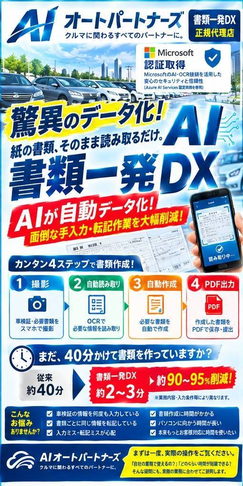
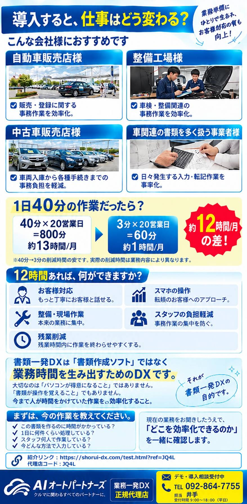
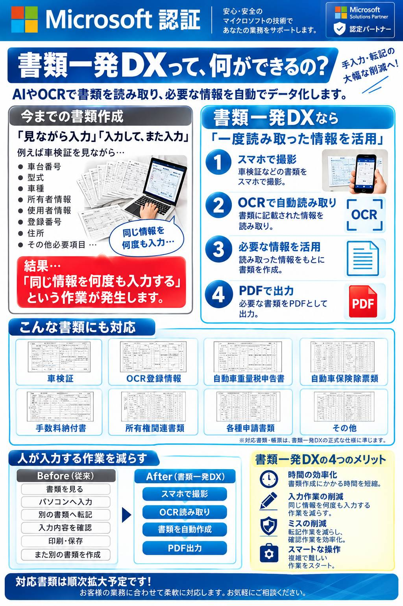

紙の書類、
見ながら入力を
終わらせませんか？
AI・OCRで書類を読み取り、必要な情報をデータ化。
書類作成・入力・転記の手間を減らし、本来の仕事に集中できる環境へ。
※掲載の削減時間・効果は目安です。実際の業務内容・書類・運用環境により異なります。

書類一発DXって、何ができるの？
紙の書類に書かれた情報をAI-OCRで読み取り、必要なデータを活用して書類作成までの流れを効率化します。
今までの書類作成
「見ながら入力」「入力して、また入力」
- 車台番号・型式・車種
- 所有者・使用者情報
- 登録番号・住所
- その他必要項目
書類一発DXなら
「一度読み取った情報を活用」
- スマホで書類を撮影
- OCRで情報を自動読み取り
- 必要な情報をもとに書類を作成
- PDFとして出力
カンタン4ステップ
現場で使いやすいシンプルな流れで、書類作成業務を効率化します。
スマホで撮影
車検証などの書類をスマホで撮影。
›OCRで自動読取り
書類に記載された必要な情報を読み取り。
›必要な情報を活用
読み取った情報をもとに書類を作成。
›PDFで出力
必要な書類をPDFとして出力。
書類一発DXで、仕事の時間を取り戻す
時間の効率化
書類を見ながら一項目ずつ入力・転記する時間を減らします。
入力作業の削減
一度読み取った情報を活用し、同じ情報を何度も入力する作業を抑えます。
確認・転記ミスの低減
人による転記作業を減らし、確認しやすい業務フローを目指します。
こんな事業者様におすすめ
自動車関連の「書類を見る・入力する・転記する」業務が多い事業者様へ。

自動車販売店様
販売・登録に関する事務作業の効率化を支援。
整備工場様
車検・整備関連の事務作業を効率化。
中古車販売店様
車両入庫から各種手続きまでの事務負担を軽減。
車関連の書類を多く扱う事業者様
日々発生する入力・転記作業の効率化を支援。
「人が入力する作業」を減らす
従来の「見る→入力→転記→確認→保存」を、AI・OCRを活用した流れへ。
Before｜従来
- 書類を見る
- パソコンへ入力
- 別の書類へ転記
- 入力内容を確認
- 印刷・保存
- また別の書類を作成
After｜書類一発DX
- スマホで撮影
- OCR読み取り
- 書類を自動作成
- PDF出力
対応書類・サービス資料
車検証、OCR登録情報、自動車重量税申告書、自動車保険関係書類など、対応範囲は業務内容に合わせてご相談ください。

よくあるご質問
どんな書類に対応できますか？
掲載資料では車検証、OCR登録情報、自動車重量税申告書、自動車保険関係書類、手数料納付書、所有権関連書類、各種申請書類などが紹介されています。実際の対応可否は書類・運用内容によって異なるため、事前にご相談ください。
パソコンが苦手でも使えますか？
スマホで撮影する工程から始められる、シンプルな4ステップを想定しています。実際の操作や導入方法は、お客様の業務に合わせてご案内します。
どのくらい時間を短縮できますか？
掲載資料では「約40分→約2〜3分」「約90〜95%削減」が目安として示されています。ただし、実際の削減時間は業務内容・書類・入力項目・運用方法などによって変わります。
導入前に相談できますか？
はい。現在の書類作成の流れや、1日の処理件数などを伺い、どこを効率化できるか一緒に確認する形がおすすめです。
まずは、今の作業を教えてください。
「どこを効率化できるのか」を一緒に確認します。お気軽にご相談ください。